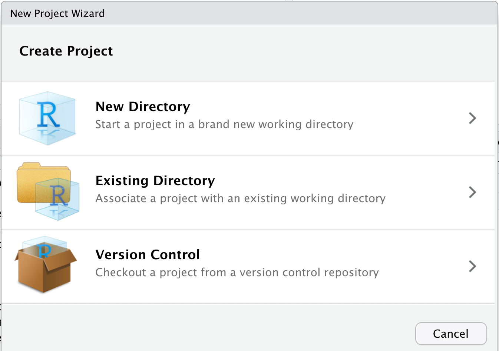
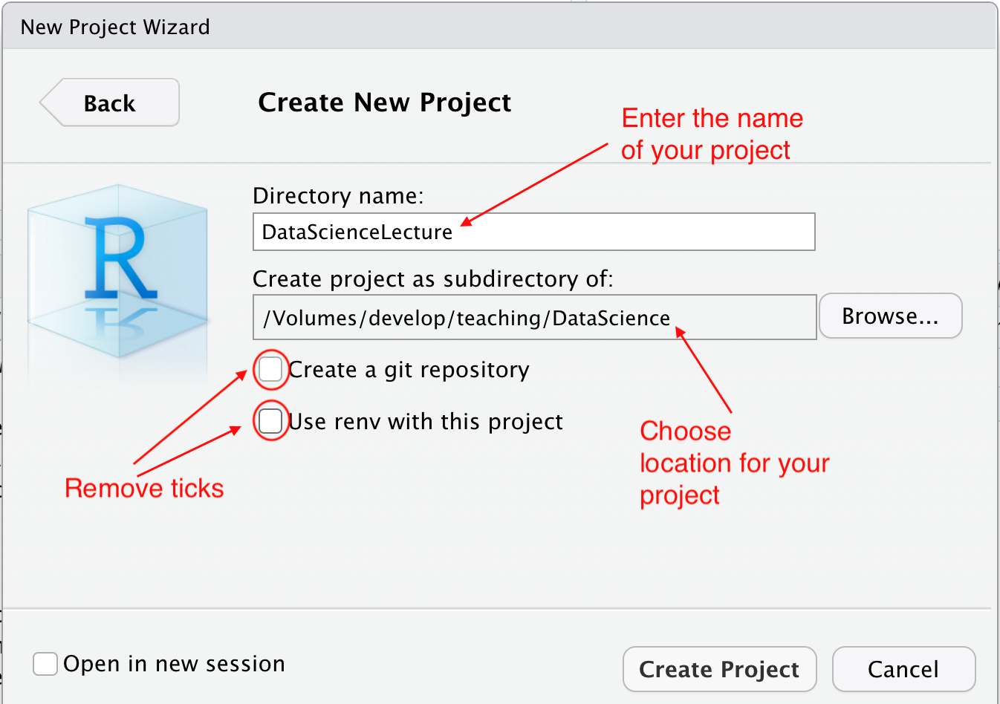
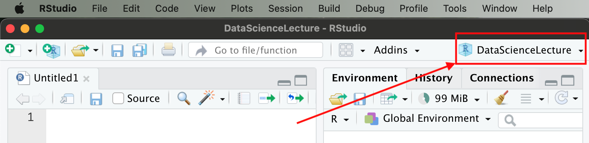

Show R code
ggplot2::ggsave(filename = "test.pdf")Claudius Gräbner-Radkowitsch
28 03 2025
This post is about how you set up an adequate project environment. By this I mean the folders you should create, and how you should save your files. The structure introduced here will help you to keep your project structured and to keep an overview about your work, but also to make it easier to share your project with others.
In all, whenever you start a new programming project you should set up the infrastructure described below. Such project could be a term paper, a research endeavor, or just the code to create some visualizations. Later you might find that some aspects of the infrastructure below feel like a bit of an overkill, especially for very small undertakings. But especially in the beginning its better to be save than sorry and to set up the whole project as described below.
In all, setting up a good working environment includes the following steps:
Then you should always familiarize yourself with how to use the here-package with your project.
There are some additional steps one might to take, such as initiating a Git repository or setting up a renv environment . Moreover, for larger projects you might also want to add a README.md. But for now the steps mentioned above are sufficient. But before going through them one by one, we need to clarify two important technical concepts:
The working directory is a folder on the computer which R uses as an default anchor for all file paths used to accesses input, such as data sets, or to store output. The default working directory the user directory, but it can be changed. We can display the current working directory using the getwd() function. In my case the working directory looks like this:
/Users/graebnerc/Teaching/DataScience22/Now assume we produced a plot in our current session and want to save it using the function ggplot2::ggsave(). You learn (or have learned) in the session on visualization that this function takes, among others, an argument filename that specifies the name of the file that is meant to contain the plot. Now if I were to tell R to save the plot under the name test.pdf like this:
R would save it in the following location:
/Users/graebnerc/Teaching/DataScience22/test.pdfAs you can see R uses the current working directory as an ‘anchor’, and all paths provided are relative to this anchor. This means that, assuming that in our working directory exists a folder called output, we could save our file test.pdf in this folder by making the following function call:
Viewed upon from a global perspective the file is saved here:
/Users/graebnerc/Teaching/DataScience22/output/test.pdfSince the path provided is relative to the working directory, we call paths such as those we would have passed to ggsave() above as relative paths.
Alternatively, we could also provide R directly with the absolute path. In this case, we would need to type the complete path, starting from the root directory of the computer. Rather then assuming the absolute path implicitly as above, we would need to do the following call:
When we use absolute paths, we can save a file at any position on the computer we want. For instance, we do the following
to save the file here:
/Users/graebnerc/GreatPlots/test.pdfWhile it seems to be attractive to use absolute paths because of their expressive power, i.e. the possibility to save files anywhere we want, I can only advice against using them. In fact, absolute paths are something that you might use in your console when you want to save a file quickly during a private programming session. But you should never use absolute paths in scripts.
A central argument in favor of relative paths is that code using relative paths can function when executed on different computers. Absolute paths look different on every computer, so they will always produce errors when being transferred across computers. Have a look at the following path from above:
/Users/graebnerc/Teaching/DataScience22/output/test.pdfI hope you agree that it is highly unlikely that a path involving my account name exists on your computer. Thus, if I sent you a script that contains a reference to this path, it will produce an error once you execute it. Thus, we will always use relative paths below.
Of course, one problem is that the ‘anchor’ from which the relative path will be evaulated on my and your computer must somehow be harmonized. As we will learn below, this can be achieved through the use of R project files and the package here.
First of all you have to decide on a place on your computer in which all data related to your project, i.e. data, scripts, images, etc., should be saved. It is usually a good idea to avoid places such as the Desktop or your Download folder.
After having identified the right place for our project on our computer, we will now create an R-project at exactly this place. To this place, open R-Studio, and either click on File/New Project, or on the blue botton in the upper left part of the pane, directly to the right of the New File button. You should now see the ‘New Project Wizard’:

We click on New Directory1 and then on New Project. Then we should see the following:

We first add the name of our project in the field Directory name. The name should not contain any special characters or blanks, and should be informative about the content of the project. I this example I have chosen the title DataScienceLecture. Below you choose the location for the project that you have determined in the previous step. By clicking on Create Project, R-Studio creates a folder of the name of the project within in the directory you have chosen in step 1. Within this folder, R-Studio automatically creates a file called NameOfYourProject.Rproj (here: DataScienceLecture.Rproj).
From now on, whenever you want to work on this project you can just double click on this project file to open R-studio and link it to this project automatically. Alternatively, you can also open R Studio, and then open the project by choosing the .Rproj file via File/Open Project....
You should always make sure that when you work on your project using R-Studio, the current session is linked to this project. You can see the project your current session is linked to in the upper right of the R-Studio pane:

Linking your current session to a project comes with many advantages: not only is your working directory automatically set to the project folder, you can also access previous commands in a command history, and its easier to transfer the project from one computer to another.
In the next step, you will now populate the newly created project directory with folders.
A sensible directory structure helps (1) not to lose track of one’s programming project, (2) to collaborate with others across computers, and (3) to use collaboration platforms such as Github and to conduct research that can be replicated and understood by others.
The following directory structure is an established recommendation. In some projects you may not need all the sub-directories suggested here, in others, it may be more appropriate to use more. In any case, the structure below is usually an excellent starting point, and it also the default one that I and many others use in most research projects.
Overall, the following folders should be created in your project directory:
data in which you save all the data used in the project. Except for cases where you use very few different data sets, it is generally advisable to create two subfolders within data: A subdirectory raw which contains the raw data as it was downloaded from the internet or collected from an experiment. This raw data should never be changed, otherwise your work will not be fully replicable and irreparable damage may occur. All changes to the data should be documented by scripts that take the raw data as input and generate a modified data set as output. This modified data set should then be stored in the subdirectory tidy.Example: You download data on GDP in Germany from Eurostat and data on unemployment from AMECO. Both data sets should be saved in the subfolder
data/raw, and they should never be manipulated. Rather, you may write a scriptsetup_data.R, which you save inR, and which imports both datasets, transforms them and creates the combined dataset calledmacro_data.csv. This is a tidy data set (you learn how to produce such data sets later in this course), which you can save in the directorydata/tidy, and that will be the vantage point for further analysis. This will allow everyone to see how the data you have used has resulted from the raw data and your work remains completely reproducible and transparent.
A subdirectory R, which contains all R scripts, i.e. files ending with .R.
A subdirectory output, in which you save all output produced by the scripts from R, such as tables or plots. The content of this folder must be fully replicable using the content of the folders R and data. If you produce a lot of output, it might be useful to create additional subdirectories, such as tables or figures.
A subdirectory text, in which you save all written text, e.g. the report you are writing, or your lecture notes.
A subdirectory misc in which you stuff everything that does not fit into any of the other directories. Such a directory is important: you should not save any misceallenous files in the root directory. This will cause a lot of confusion. As a rule of thumb, the only files you should keen in your project main directory is the .Rproj file and, if applicable a LICENSE.md containing a license for your code, and a README.md file in which you explain the content and functioning of your project.
Assuming our project directory is called DataScienceLecture, the the default directory structure would look like this:
Now that you have set up a sensible directory structure, the only thing you are missing for woriless project work is the knowledge of how to use the here-package. This helps us to remedy the problem of finding a sensible anchor for out relative paths, as discussed in the first section.
The here-package allows you to create file paths in a way that those parts of your code that contain file paths always work across different computers.
As described above, you should always use relative paths in everyday work. In two situations, however, the use of relative paths can be problematic (1) when collaborating with others, and (2) when using R Markdown.2.
Suppose, for instance, that Birte and Claudius are working together on an R script. The following line appears in the code:
This code saves a plot in a pdf file in the subdirectory output/. For the file to be saved in the right directory, both Birte and Claudius must use the same working directory, otherwise the relative path would point to different locations on their computers (see the first section above).
Alternatively, Claudius could use an absolute path:
While this makes sure that the file will be saved in the right place on his computer, irrespective of his working directory, the likelihood that this code also works when executed on Birte’s computer is basically zero per cent: almost certainly the script is saved on a different location on her computer. She would then need to adjust the absolute path to her needs, e.g. to:
This code, of course, would not work on Claudius’ computer. A dilemma. One remedy would be to adjust the script before using it. But this would be annoying and antiquated. It would also be very bad coding style: you should write your code always in a way that it works on different computers. In the end, collaboration should be fun, not pain.
Fortunately, the problem can be solved easily using the function here::here(). Here both of them simpy write:
The function here::here() automatically constructs an absolute path tailored to the needs of their computers. When Claudius would call
the output would be:
"/Users/claudius/projects/R-Projekt-Birte/output/nice_plot.pdf"And if Birte made this call on her computer the output would be:
"/Users/Birte/projects/R-Projekt-Claudius/output/nice_plot.pdf"This way, the two can simply exchange the code with each other without having to adjust the code to their local paths. For this reason, and because of some other potential difficulties that we will discuss later, you should always formulate paths using the here::here() function. This is a little extra work, but it saves a lot of trouble in the long run.
For here::here() to work, however, you need to clarify the position of your script relative to the root directory of your project at the very beginning of your script. By ‘root directory of your project’ I mean the name of the directory containing your .Rproj file.
To clarify the relative position of the script, you should add the following function call in the first line of your script:
In the case you are working on the script set_up_data.R, which is located correctly in the R-directory as follows:
Then the first line of set_up_data.R should be:
This ensures that subsequent calls of here::here() construct the correct absolute paths.
Note: The call of
here::i_am()at the very beginning of a script is an exception to the important rule that a script should always start with a reference to the packages used within the script.
We could also have created a folder in the previous step and then chosen this folder here via Existing directory. This is useful if you want to add an R project file to an already existing project, but the approach of creating a new directory is more general and should be your default approach.↩︎
With R Markdown you can write texts directly in R. This allows you to keep statistical analysis and the description of the results in one document. This homepage, for example, was also written entirely in R Markdown. You will learn how to use R-Markdown soon.↩︎